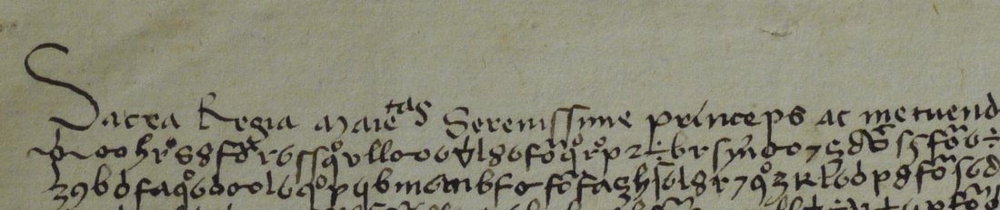

At a glanceNot solved · ten pieces unread, five not photographed
- The documents
- The bundle of cipher letters of the Concistoro of Siena: 25 pieces photographed, from before 1429 to 1547, with 43 key sheets filed beside them. Each letter has its own key.
- Where
- Archivio di Stato di Siena, Concistoro 2308, fasc. 2 “Lettere in cifra”. On DECODE as records R4790–R4814 (letters) and R4746–R4789 (keys), all catalogued “1500–1599” with no status.
- Deciphered elsewhere
- No. 25 (96.2%), no. 18 (87.1%), no. 14 (58.6%) and no. 4 (79%) here; nos. 6 and 24 by George Lasry with filed key R4755. Each is a different cipher, with its own page.
- On this page
- Nos. 7, 9, 11, 15, 17, 19, 20, 21, 23 and an unnumbered slip, all unread, with no shared key claimed (nos. 20 and 23 probably share one system); and Meister’s no. 1 of 1421, not among the photographs.
- How they were tried
- Every filed key compared with every letter, ten tested sign by sign; homophonic, null-aware and letter-pair solvers on the long systems.
- Still open
- All of these pieces. The 1421 letter needs the archive.
Until 14 October 2026 this page carried the whole bundle. Under the rule of one key per page, the letters whose keys were found now have their own pages (above); this page keeps the bundle’s history, its keys, and the pieces still unread.
01The bundle, and where it was found
Aloys Meister saw the bundle in 1902 as “Lettere in cifra e loro chiavi”, in two fascicles: Cifrari, 42 original keys, 18 of them of the fifteenth century and the oldest dated 1433; and Lettere in cifra, 29 pieces, “dated no. 1 1421; no. 4 1456; no. 11 1478; no. 17 1528”. Giovanni Cecchini’s printed inventory of the Concistoro (1952) lists it as no. 2308, “Cifrari e lettere cifrate”, and says the letters are only partly deciphered. The Ilardi microfilm at Yale (reel 1503) put only the first thirteen frames online, all of them keys, so the letters were taken to be out of reach.
They are on DECODE. The whole busta was photographed in the Siena reading room: the keys are records R4746–R4789 (Concistoro_2308_01 to _43), the letters R4790–R4814 (_44 to _68), behind a cover sheet reading “Fasc. 2, Pezzi 25”. DECODE dates every letter “1500–1599” and gives none a status; the dates and identifications below come from the letters themselves. The pencil numbers on the pieces match Meister’s dated items, so they are his numbering. What the photographs hold:
| No. | DECODE | What it is | Outcome |
|---|---|---|---|
| 1, 2 | — | not photographed (no. 1 is Meister’s 1421 letter) | needs the archive |
| 3, 5 | R4792, R4791 | clear private letters | no cipher |
| 4 | R4793 | Galgano Borghesi to Leonardo Benvoglienti, Naples, 12 May 1456 | own page: key from a fragment on the letter |
| 6, 24 | R4795, R4812 | two letters of Cristofano to the Signori, c. 1431–38 | own page: deciphered by George Lasry with key R4755 |
| 7 | R4796 | an orator at Milan to the Officials of the Balìa, 1450s | open (short) |
| 8 | R4797 | slip of about 1440–47 with its decipherment on the same sheet | deciphered at the time |
| 9, 19, 21 | R4798, R4807, R4809 | short cipher runs in clear letters | open (short) |
| 10 | R4799 | one run glossed “presura di Montepulciano” | deciphered at the time |
| 11 | R4800 | Donato Acciaiuoli to Lorenzo de’ Medici, Rome, 13 June 1478 (a Florentine letter) | open (no key) |
| 12 | R4790 | letter in graphic signs; DECODE marks its second photograph (R1858) decrypted | not re-examined |
| 13, 16 | R4801, R4804 | a slip of 1527–29 and its clear decipherment | deciphered at the time |
| 14 | R4802 | Sienese envoys to the Priori and Capitano del Popolo, before 1429 | own page: key from the ciphertext |
| 15 | R4803 | Mario Bandini at Charles V’s court, Dec 1546 / Jan 1547 | open (short; candidate key R4764) |
| 17 | R4805 | to Antonio del Vescovo, orator, August 1528, “questa cifra è quella di Balìa” | open (short) |
| 18 | R4806 | Latin treaty articles between Siena and the Emperor, 1510s–20s | own page: key from the ciphertext |
| 20, 23 | R4808, R4811 | a letter to a king and a full page, probably one cipher, about 4,900 signs | open |
| 22 | R4810 | drafts of a letter of 1455–58, clear and numbered versions side by side | deciphered at the time |
| 25 | R4813 | slip to the Signoria about a lord’s route | own page: key from the ciphertext |
| 29 | R4814 | scrap of a word list, not a letter | not a letter |
| — | R4794 | unnumbered slip in graphic signs with the numbers 44, 26, 67, 74 | open (short) |
| 26–28 | — | not photographed | needs the archive |
02The 43 keys
The key fascicle is a fine run of Sienese chancery ciphers: a key of 1433 for Antonio Petrucci (Meister’s example), the “Cifra cum fratre Bernardino” of the time of the antipope Felix, the key of the ambassadors at Milan of 1454, a key for the podestà of Casole, Antonio Bichi’s of 1478, keys of the Borgia years naming Duke Valentino and Pandolfo Petrucci, a letter-key dated 4 August 1502, the 1536 key, and code books of the 1540s. Their alphabets were compared by eye with the sign sets of every letter. Six fifteenth-century keys (R4750, R4753, R4754, R4756, R4757, R4762) were transcribed in full and tested sign by sign on nos. 4 and 7, and four later ones (R4760, R4764, R4768, R4778) on nos. 15, 17 and 20.
No filed key fits any of the pieces on this page. The nearest miss: no. 7, from an orator at Milan in the 1450s, looked made for the 1454 Milan key (R4750), but the letter’s own interlinear glosses give values that contradict it, a fifth of its signs are not in the key, and the key’s only sign for e is 2.5% of the letter. One filed key was missed: R4755, “Cifra cum Christofano”, was indexed here but never tried on nos. 6 and 24; George Lasry found that it fits them.
03The pieces still unread

- No. 1 (1421), nos. 2, 26, 27, 28: not among the DECODE photographs. Only the Archivio di Stato di Siena can supply them; the 1421 date, which would be older than the project’s oldest reading, stays untested.
- Nos. 20 + 23 (about 4,900 signs): a letter to a king (“Sacra Regia Maiestas … die penultimo mensis Martii”) and a full page, which share their sign inventory and probably one system. The solver that recovers a synthetic Italian homophonic cipher of the same size fails on them in every variant tried (Italian, Latin, Catalan and Spanish models; nulls; signs for letter pairs; the recurring f groups as units), so they are probably not plain letter substitution as transcribed: syllabic or code signs, or look-alike signs merged.
- No. 11 (Florentine, 1478, 409 signs): Donato Acciaiuoli to Lorenzo de’ Medici, intercepted by Siena; no key, and Gabbrielli’s index of Florentine keys has none for Donato Acciaiuoli.
- Nos. 7, 9, 15, 17, 19, 21 and R4794 (46 to 363 signs): too short to break without a key, and no filed key fits; no. 15 has a candidate, R4764 (Buoninsegni, orator to His Majesty), transcribed but not matched; no. 7 has nine values from its gloss.
These pieces are listed together only because they are in one bundle; each may use its own key.
04The pieces deciphered at the time
Four pieces carry their own contemporary decipherment; they are other keys, not results of this work, and are noted for completeness.
- No. 8 (c. 1440–47): a ciphered slip pasted below its own decipherment, which mentions the antipope Felix, the Duke of Milan, Bianca Maria and Leonello d’Este, and Niccolò Piccinino.
- No. 10: one run glossed letter by letter “presura di Montepulciano”.
- Nos. 13 and 16 (1527–29): no. 16 is the clear decipherment of no. 13, on the Pope’s coming to Bologna and the taking of Modena and Reggio.
- No. 22 (1455–58): four drafts of one letter, about signal fires, spingarde and “la lettera di Calisto”; a clear draft pairs with one where numbers stand for key words (4 = L., 7 = denari, 15 = parti, 16 = accordo, 17 = speranza).
05Method
Every piece was transcribed from the DECODE photographs by line crops at three to six times native size, sign by sign, with a named inventory of shapes. The solver is a homophonic annealing search (a sign may stand for any letter, several signs for one letter), scored by an Italian or Latin n-gram model of the period and a letter-frequency prior, run in stages from trigrams to five-grams with restarts seeded by frequency; where the scribe divides words, the model scores the spaces too. The same program recovers a synthetic Italian homophonic cipher of 2,673 signs and 58 symbols perfectly, and it is the program that gave the keys of nos. 14, 18 and 25.
06Sources
- Archivio di Stato di Siena, Concistoro 2308: DECODE records R4790–R4814 (letters), R4746–R4789 (keys) and R1858.
- A. Meister, Die Anfänge der modernen diplomatischen Geheimschrift (Paderborn 1902), pp. 50–51.
- G. Cecchini (ed.), Archivio del Concistoro del Comune di Siena. Inventario (Pubblicazioni degli Archivi di Stato X, 1952), p. 366.
- Yale Dataverse, Ilardi microfilm reel 1503 (keys only) and reel 58 (Gabbrielli’s Florentine key index).
Manuscript rights: Archivio di Stato di Siena.
Transcriptions, key index and solvers: targets/siena1421/ in the repository.